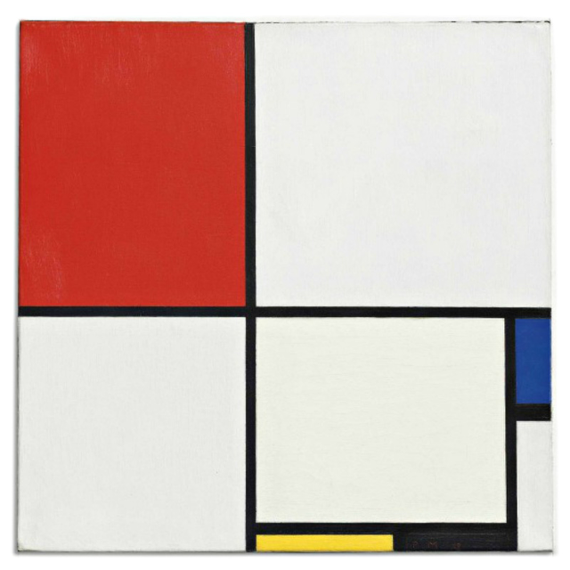
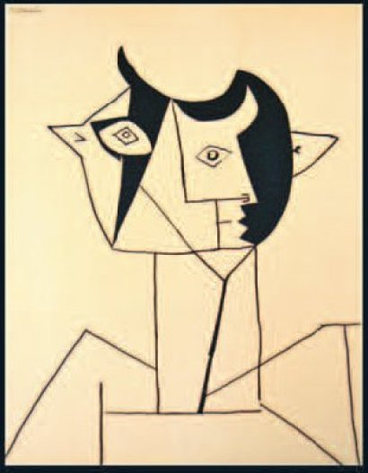
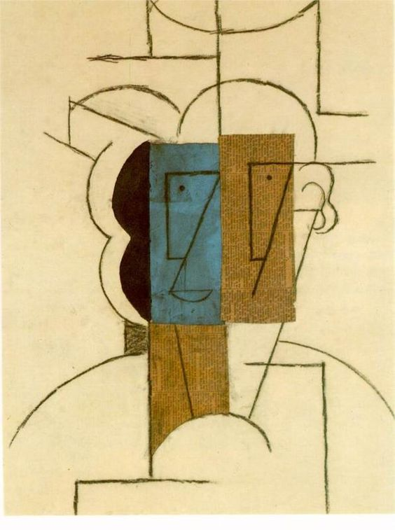
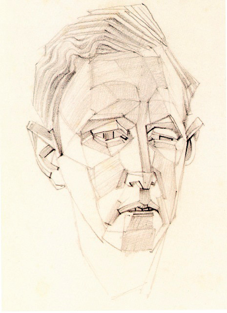
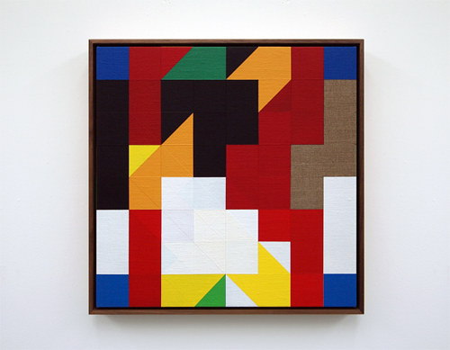

P1: Geometrísk listaverk
Hér er ætlunin að æfa okkur í því að nota einföld form og liti með því að endurgera nokkur listaverk, og síðan gera okkar eigin listaverk.
P1a: Mondrain
Endurgerið eitt af málverkunum hér fyrir neðan. Notið eingöngu einföld form ("2D forms") í p5. Reynið að halda hlutföllum og litum alveg eins og á fyrirmyndinni. Þið getið hægrismellt á myndina, hlaðið henni niður og opnað svo t.d. í paint eða inkscape til þess að skoða hana betur. Skilið verkefninu með því að setja inn á neocities síðuna ykkar.
Hér er ég að leggja áherslu á nákvæmni. Veljið alveg réttu litina. Mælið verkið nákvæmlega og notið réttar stærðir.
Piet Mondrian (1872-1944), Composition no. III, with Red, Blue, Yellow and Black, 1929. [Mynd © Christie’s, 2015.]
P1b: Listaverk að eigin vali
Endurgerið eitt málverkanna hér fyrir neðan eftir bestu getu.
Hér er ég ekki að leggja eins mikla áherslu á nákvæmni. Þið hafið nokkuð listrænt frelsi til þess að túlka myndirnar sem erfitt er að gera nákvæmlega. En reynið að vera alveg nákvæm í litavali og stærðarhlutföllum.
Skilið forritinu í gegnum innu.
Pablo Picasso, Portrait Cubiste.
Pablo Picasso, Head of a Man with a Hat, Paris, December 1912
Hans Bellmer. Portrait de Ferdinand Springer.
Tom Hackney. Chess Painting No. 61 (Duchamp vs. Hanauer, New York, 1952).

M. C. Escher. Cycle (1938).
Verkið ætti að innihalda einföld form. Á p5 reference síðunni hvet ég ykkur til að skoða vel form og línur:
- 2D primitives
- Attributes
- Curves
Verkinu verður skilað á ykkar eigin neocities síðu.